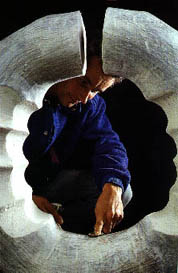

|
More
on Paperclay
by
Graham Hay
Because of the rapid drying of dry-to-dry joins, and the strength
of unfired paperclay, walls cannot only be built upwards but also
horizontally and downwards. After building a dry rod frame, I build
inwards, outwards, downwards or upwards from it by rods, planes
or spheres. The base frame can be a single vertical sheet, a cone,
a cube of planes or rods, or any other form. For joining two curved
dry surfaces, I use plastic paperclay dipped in paperclay slip to
increase the contact surfaces and strength of the join. I anticipate
unusual forms as others also gain control over these multi-directional
building techniques. Wool thread or string can be soaked in paperclay
slip, allowed to dry completely before re-soaking it again. Three
or more soaking/drying cycles create a good sized rod. This is a
quick way to build strong straight or curved rods, rather than rolling
them out. They can be cut by scissors to the desired length for
building. Alternatively, while plastic, these string clay rods can
be draped over a form to dry in curving lines. More recently, I
have rolled out or cut slabs into tapered rods of plastic paperclay
which are bent into curves and spirals before drying. These can
be then 'spot-welded' with slip from a squeeze bottle to form supports
or decoration for delicate objects.

Having used paperclay for more than four years, increasingly I find
myself considering sources of paper and its role in our lives. Despite
the promise of an electronic society, the computer has increased
the volume of paper we handle daily: our weekend newspaper now boasts
more than 432 pages of news and advertisements. Similarly, the annual
distribution and recycling of yellow and white phone books creates
a mountain of paper. Without paper, our whole administration and
knowledge systems would collapse. More specifically, for artists,
paper is essential. Apart from increasing the strength of a clay
body, paper underpins most artistic practices; we use it to record
ideas, design and record our ceramic work, as well as do our accounts
and correspond with customers, galleries and shops. Similarly, the
documentation and organisation of exhibitions involves a huge amount
of paper for invitations, grant applications, press releases, catalogues
and posters. In two dimensional art practices, such as printing
and painting, contemporary art simply would not exist without paper.
How many of us have a small home library of books and journals such
as Ceramics: Art and Perception? We line our homes and offices with
masses of paper as if we are creating paper nests or cocoons. Even
when recycling paper into my paperclay, I could not keep up with
the paper tide, so when a local paperclay became available for conventional
clay prices I began to create paper sculptures. After stacking the
paper I drilled, cut, carved, sanded and bound it. Following this
experience, I began to see paperclay as a solid material that we
can shape and refine into different forms before finally assembling
the dried pieces into a completed work.
I also considered our local use of clay as a building material.
Because of wood-eating white ants, most of our old buildings and
modern houses are made from ceramic bricks. So along with the necessary
paperwork these brick buildings shape how architecture is organised
and presented. Consequently I began to make tiny paperclay bricks
which, when dry, I joined together into organic forms. For me, these
were more about creating internal spaces than external forms, that
is, the public and private spaces in which we and art exist. Ceramic
art has a number of clearly defined schools of aesthetics arising
from cultural influences and from the physical properties and limitations
of the material. Paperclay enables the artist to use traditional
ceramic building techniques as well as skills borrowed from elsewhere.
Consequently the work can mimic many of the forms created in these
materials. However, we already have a tradition through ceramists:
Henry Pimm (1980s), Richard Notkin and Adrian Saxe, who create ceramic
objects which imitate wood or metal objects. The fundamental difference
here is process rather than imitation, for paperclay enables us
to easily create this type of work with some expertise. If paperclay
removes the clay skills necessary to create these illusions, does
this necessarily alter the significance of these artworks and traditional
ceramic skill hierarchies?
Next
Page > New Possibilities > Page
4
More Articles
|